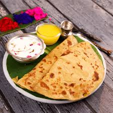

🥮 Puran Poli Recipe

Ingredients
For Dough:
- 1 cup whole wheat flour
- 1/2 cup all-purpose flour (optional)
- 2 tbsp oil or ghee
- Water to knead
- Pinch of salt
For Puran (Filling):
- 1 cup chana dal (split Bengal gram)
- 3/4 cup jaggery (grated)
- 1/2 tsp cardamom powder
- 1/4 tsp nutmeg powder (optional)
- 2 tbsp ghee
Instructions
- Soak chana dal for 1 hour, then pressure cook until soft. Drain water completely.
- Mash dal and cook with jaggery in a pan until it thickens and becomes dry. Add cardamom and nutmeg.
- Let the filling cool, then divide into equal balls.
- Knead dough with flour, salt, oil, and water until soft. Rest for 30 minutes.
- Roll a dough ball, place a filling ball in center, seal, and roll gently into a flat disc.
- Cook on a hot tawa with ghee until golden on both sides.
Serve With
- Ghee or milk
- Gujarati kadhi
- As a festive sweet
💡 Tip: Cook puran mixture well to avoid stickiness while rolling.